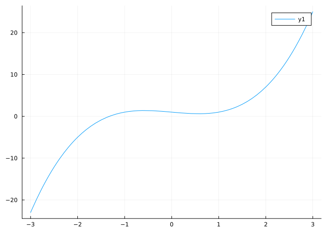
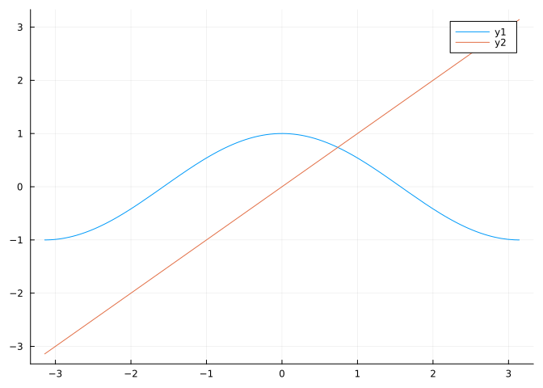
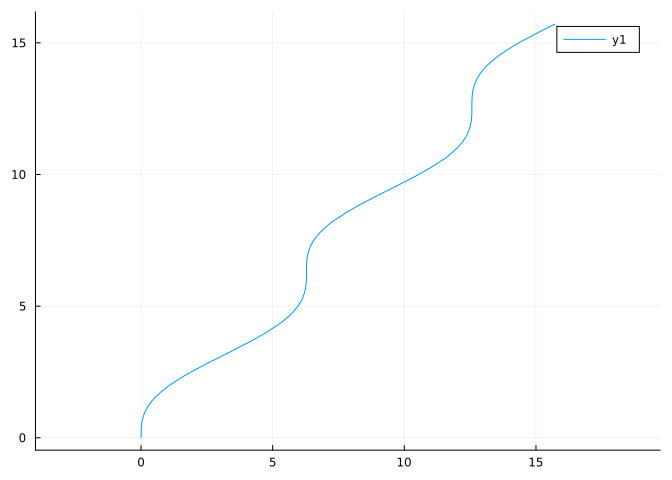
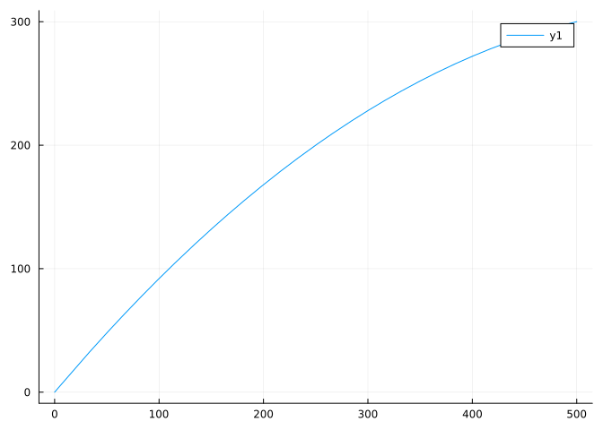
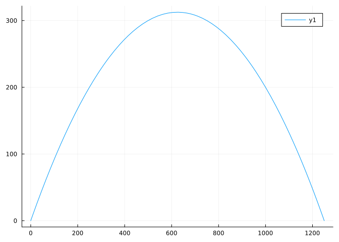
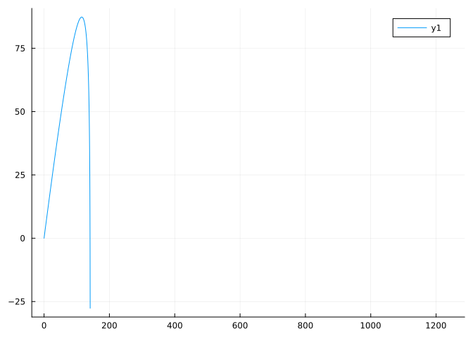
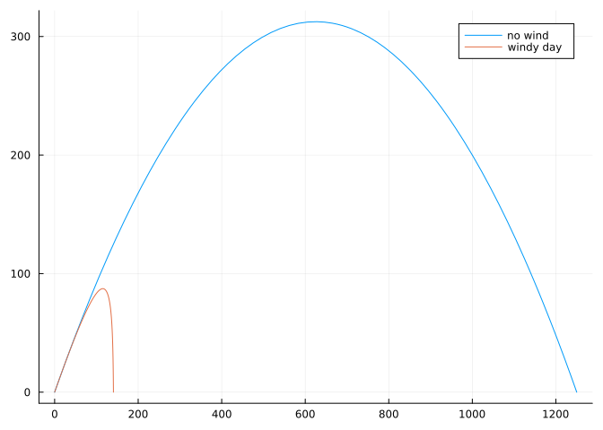
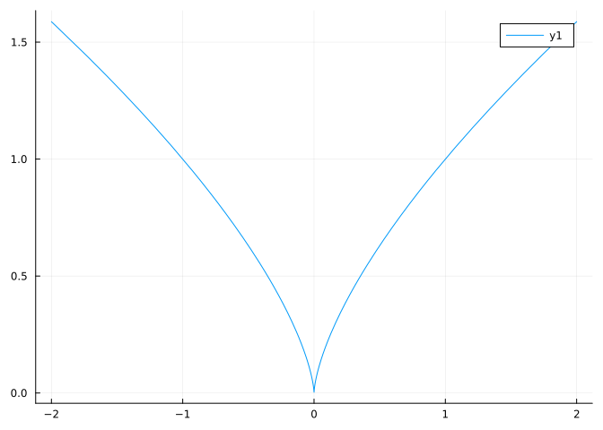
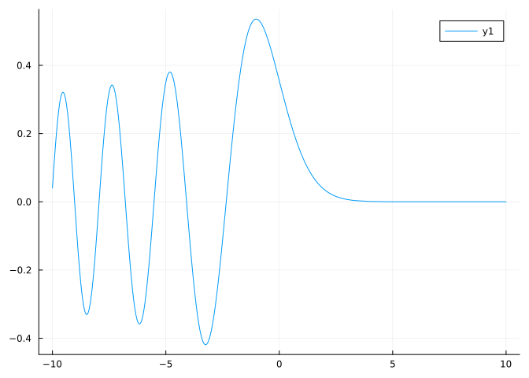
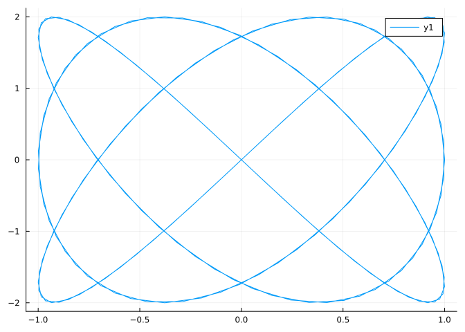

MethodError: MethodError: no method matching parse(::ImageFile)
[0mClosest candidates are:
[0m parse([91m::IO[39m; flavor) at /Applications/Julia-1.8.app/Contents/Resources/julia/share/julia/stdlib/v1.8/Markdown/src/parse/parse.jl:91
[0m parse([91m::IO[39m, [91m::Markdown.MD[39m; breaking) at /Applications/Julia-1.8.app/Contents/Resources/julia/share/julia/stdlib/v1.8/Markdown/src/parse/parse.jl:88
[0m parse([91m::IO[39m, [91m::Markdown.MD[39m, [91m::Markdown.Config[39m; breaking) at /Applications/Julia-1.8.app/Contents/Resources/julia/share/julia/stdlib/v1.8/Markdown/src/parse/parse.jl:79
[0m ...21 Implications of continuity
This section uses these add-on packages:
using CalculusWithJulia
using Plots
using Roots
using SymPyContinuity for functions is a valued property which carries implications. In this section we discuss two: the intermediate value theorem and the extreme value theorem. These two theorems speak to some fundamental applications of calculus: finding zeros of a function and finding extrema of a function.
21.1 Intermediate Value Theorem
The intermediate value theorem: If \(f\) is continuous on \([a,b]\) with, say, \(f(a) < f(b)\), then for any \(y\) with \(f(a) \leq y \leq f(b)\) there exists a \(c\) in \([a,b]\) with \(f(c) = y\).
In the early years of calculus, the intermediate value theorem was intricately connected with the definition of continuity, now it is a consequence.
The basic proof starts with a set of points in \([a,b]\): \(C = \{x \text{ in } [a,b] \text{ with } f(x) \leq y\}\). The set is not empty (as \(a\) is in \(C\)) so it must have a largest value, call it \(c\) (this requires the completeness property of the real numbers). By continuity of \(f\), it can be shown that \(\lim_{x \rightarrow c-} f(x) = f(c) \leq y\) and \(\lim_{y \rightarrow c+}f(x) =f(c) \geq y\), which forces \(f(c) = y\).
21.1.1 Bolzano and the bisection method
Suppose we have a continuous function \(f(x)\) on \([a,b]\) with \(f(a) < 0\) and \(f(b) > 0\). Then as \(f(a) < 0 < f(b)\), the intermediate value theorem guarantees the existence of a \(c\) in \([a,b]\) with \(f(c) = 0\). This was a special case of the intermediate value theorem proved by Bolzano first. Such \(c\) are called zeros of the function \(f\).
We use this fact when a building a “sign chart” of a polynomial function. Between any two consecutive real zeros the polynomial can not change sign. (Why?) So a “test point” can be used to determine the sign of the function over an entire interval.
Here, we use the Bolzano theorem to give an algorithm - the bisection method - to locate the value \(c\) under the assumption \(f\) is continous on \([a,b]\) and changes sign between \(a\) and \(b\).
MethodError: MethodError: no method matching parse(::ImageFile)
[0mClosest candidates are:
[0m parse([91m::IO[39m; flavor) at /Applications/Julia-1.8.app/Contents/Resources/julia/share/julia/stdlib/v1.8/Markdown/src/parse/parse.jl:91
[0m parse([91m::IO[39m, [91m::Markdown.MD[39m; breaking) at /Applications/Julia-1.8.app/Contents/Resources/julia/share/julia/stdlib/v1.8/Markdown/src/parse/parse.jl:88
[0m parse([91m::IO[39m, [91m::Markdown.MD[39m, [91m::Markdown.Config[39m; breaking) at /Applications/Julia-1.8.app/Contents/Resources/julia/share/julia/stdlib/v1.8/Markdown/src/parse/parse.jl:79
[0m ...Call \([a,b]\) a bracketing interval if \(f(a)\) and \(f(b)\) have different signs. We remark that having different signs can be expressed mathematically as \(f(a) \cdot f(b) < 0\).
We can narrow down where a zero is in \([a,b]\) by following this recipe:
- Pick a midpoint of the interval, for concreteness \(c = (a+b)/2\).
- If \(f(c) = 0\) we are done, having found a zero in \([a,b]\).
- Otherwise if must be that either \(f(a)\cdot f(c) < 0\) or \(f(c) \cdot f(b) < 0\). If \(f(a) \cdot f(c) < 0\), then let \(b=c\) and repeat the above. Otherwise, let \(a=c\) and repeat the above.
At each step the bracketing interval is narrowed – indeed split in half as defined – or a zero is found.
For the real numbers this algorithm never stops unless a zero is found. A “limiting” process is used to say that if it doesn’t stop, it will converge to some value.
However, using floating point numbers leads to differences from the real-number situation. In this case, due to the ultimate granularity of the approximation of floating point values to the real numbers, the bracketing interval eventually can’t be subdivided, that is no \(c\) is found over the floating point numbers with \(a < c < b\). So there is a natural stopping criteria: stop when there is an exact zero, when the bracketing interval gets too small to subdivide, or when the interval is as small as desired.
We can write a relatively simple program to implement this algorithm:
function simple_bisection(f, a, b)
if f(a) == 0 return(a) end
if f(b) == 0 return(b) end
if f(a) * f(b) > 0 error("[a,b] is not a bracketing interval") end
tol = 1e-14 # small number (but should depend on size of a, b)
c = a/2 + b/2
while abs(b-a) > tol
if f(c) == 0 return(c) end
if f(a) * f(c) < 0
a, b = a, c
else
a, b = c, b
end
c = a/2 + b/2
end
c
endsimple_bisection (generic function with 1 method)This function uses a while loop to repeat the process of subdividing \([a,b]\). A while loop will repeat until the condition is no longer true. The above will stop for reasonably sized floating point values (within \((-100, 100)\), say), but, as written, ignores the fact that the gap between floating point values depends on their magnitude.
The value \(c\) returned need not be an exact zero. Let’s see:
c = simple_bisection(sin, 3, 4)3.141592653589793This value of \(c\) is a floating-point approximation to \(\pi\), but is not quite a zero:
sin(c)1.2246467991473532e-16(Even pi itself is not a “zero” due to floating point issues.)
21.1.2 The find_zero function.
The Roots package has a function find_zero that implements the bisection method when called as find_zero(f, (a,b)) where \([a,b]\) is a bracket. Its use is similar to simple_bisection above. This package is loaded when CalculusWithJulia is. We illlustrate the usage of find_zero in the following:
xstar = find_zero(sin, (3, 4))3.141592653589793
Warning
Notice, the call find_zero(sin, (3, 4)) again fits the template action(function, args...) that we see repeatedly. The find_zero function can also be called through fzero. The use of (3, 4) to specify the interval is not necessary. For example [3,4] would work equally as well. (Anything where extrema is defined works.)
This function utilizes some facts about floating point values to guarantee that the answer will be an exact zero or a value where there is a sign change between the next bigger floating point or the next smaller, which means the sign at the next and previous floating point values is different:
sin(xstar), sign(sin(prevfloat(xstar))), sign(sin(nextfloat(xstar)))(1.2246467991473532e-16, 1.0, -1.0)Example
The polynomial \(p(x) = x^5 - x + 1\) has a zero between \(-2\) and \(-1\). Find it.
p(x) = x^5 - x + 1
c₀ = find_zero(p, (-2, -1))
(c₀, p(c₀))(-1.1673039782614187, -6.661338147750939e-16)We see, as before, that \(p(c)\) is not quite \(0\). But it can be easily checked that p is negative at the previous floating point number, while p is seen to be positive at the returned value:
p(c₀), sign(p(prevfloat(c₀))), sign(p(nextfloat(c₀)))(-6.661338147750939e-16, -1.0, 1.0)Example
The function \(q(x) = e^x - x^4\) has a zero between \(5\) and \(10\), as this graph shows:
q(x) = exp(x) - x^4
plot(q, 5, 10)Find the zero numerically. The plot shows \(q(5) < 0 < q(10)\), so \([5,10]\) is a bracket. We thus have:
find_zero(q, (5, 10))8.6131694564414Example
Find all real zeros of \(f(x) = x^3 -x + 1\) using the bisection method.
We show next that symbolic values can be used with find_zero, should that be useful.
First, we produce a plot to identify a bracketing interval
@syms x
plot(x^3 - x + 1, -3, 3)
It appears (and a plot over \([0,1]\) verifies) that there is one zero between \(-2\) and \(-1\). It is found with:
find_zero(x^3 - x + 1, (-2, -1))-1.324717957244746Example
The equation \(\cos(x) = x\) has just one solution, as can be seen in this plot:
𝒇(x) = cos(x)
𝒈(x) = x
plot(𝒇, -pi, pi)
plot!(𝒈)
Find it.
We see from the graph that it is clearly between \(0\) and \(2\), so all we need is a function. (We have two.) The trick is to observe that solving \(f(x) = g(x)\) is the same problem as solving for \(x\) where \(f(x) - g(x) = 0\). So we define the difference and use that:
𝒉(x) = 𝒇(x) - 𝒈(x)
find_zero(𝒉, (0, 2))0.7390851332151607Example: Inverse functions
If \(f(x)\) is monotonic and continuous over an interval \([a,b]\) then it has an inverse function. That is for any \(y\) between \(f(a)\) and \(f(b)\) we can find an \(x\) satisfying \(y = f(x)\) with \(a \leq x \leq b\). This is due, of course, to both the intermediate value theorem (which guarantees an \(x\)) and monotonicity (which guarantees just one \(x\)).
To see how we can numerically find an inverse function using find_zero, we have this function:
function inverse_function(f, a, b, args...; kwargs...)
fa, fb = f(a), f(b)
m, M = fa < fb ? (fa, fb) : (fb, fa)
y -> begin
@assert m ≤ y ≤ M
find_zero(x ->f(x) - y, (a,b), args...; kwargs...)
end
endinverse_function (generic function with 1 method)The check on fa < fb is due to the possibility that \(f\) is increasing (in which case fa < fb) or decreasing (in which case fa > fb).
To see this used, we consider the monotonic function \(f(x) = x - \sin(x)\) over \([0, 5\pi]\). To graph, we have:
f(x) = x - sin(x)
a, b = 0, 5pi
plot(inverse_function(f, a, b), f(a), f(b); aspect_ratio=:equal)
(We plot over the range \([f(a), f(b)]\) here, as we can guess \(f(x)\) is increasing.)
Example
We wish to compare two trash collection plans
- Plan 1: You pay \(47.49\) plus \(0.77\) per bag.
- Plan 2: You pay \(30.00\) plus \(2.00\) per bag.
There are some cases where plan 1 is cheaper and some where plan 2 is. Categorize them.
Both plans are linear models and may be written in slope-intercept form:
plan1(x) = 47.49 + 0.77x
plan2(x) = 30.00 + 2.00xplan2 (generic function with 1 method)Assuming this is a realistic problem and an average American household might produce \(10\)-\(20\) bags of trash a month (yes, that seems too much!) we plot in that range:
plot(plan1, 10, 20)
plot!(plan2)
We can see the intersection point is around \(14\) and that if a family generates between \(0\)-\(14\) bags of trash per month that plan \(2\) would be cheaper.
Let’s get a numeric value, using a simple bracket and an anonymous function:
find_zero(x -> plan1(x) - plan2(x), (10, 20))14.21951219512195Example, the flight of an arrow
The flight of an arrow can be modeled using various functions, depending on assumptions. Suppose an arrow is launched in the air from a height of \(0\) feet above the ground at an angle of \(\theta = \pi/4\). With a suitable choice for the initial velocity, a model without wind resistance for the height of the arrow at a distance \(x\) units away may be:
\[ j(x) = \tan(\theta) x - (1/2) \cdot g(\frac{x}{v_0 \cos\theta})^2. \]
In julia we have, taking \(v_0=200\):
j(x; theta=pi/4, g=32, v0=200) = tan(theta)*x - (1/2)*g*(x/(v0*cos(theta)))^2j (generic function with 1 method)With a velocity-dependent wind resistance given by \(\gamma\), again with some units, a similar equation can be constructed. It takes a different form:
\[ d(x) = (\frac{g}{\gamma v_0 \cos(\theta)} + \tan(\theta)) \cdot x + \frac{g}{\gamma^2}\log(\frac{v_0\cos(\theta) - \gamma x}{v_0\cos(\theta)}) \]
Again, \(v_0\) is the initial velocity and is taken to be \(200\) and \(\gamma\) a resistance, which we take to be \(1\). With this, we have the following julia definition (with a slight reworking of \(\gamma\)):
function d(x; theta=pi/4, g=32, v0=200, gamma=1)
a = gamma * v0 * cos(theta)
(g/a + tan(theta)) * x + g/gamma^2 * log((a-gamma^2 * x)/a)
endd (generic function with 1 method)For each model, we wish to find the value of \(x\) after launching where the height is modeled to be \(0\). That is how far will the arrow travel before touching the ground?
For the model without wind resistance, we can graph the function easily enough. Let’s guess the distance is no more than \(500\) feet:
plot(j, 0, 500)
Well, we haven’t even seen the peak yet. Better to do a little spade work first. This is a quadratic function, so we can use roots from SymPy to find the roots:
roots(j(x))Dict{Any, Any} with 2 entries:
1250.00000000000 => 1
0 => 1We see that \(1250\) is the largest root. So we plot over this domain to visualize the flight:
plot(j, 0, 1250)
As for the model with wind resistance, a quick plot over the same interval, \([0, 1250]\) yields:
plot(d, 0, 1250)
This graph eventually goes negative and then stops. This is due to the asymptote in model when (a - gamma^2*x)/a is zero. To plot the trajectory until it returns to \(0\), we need to identify the value of the zero. This model is non-linear and we don’t have the simplicity of using roots to find out the answer, so we solve for when \(a-\gamma^2 x\) is \(0\):
gamma = 1
a = 200 * cos(pi/4)
b = a/gamma^2141.4213562373095Note that the function is infinite at b:
d(b)-InfFrom the graph, we can see the zero is around b. As y(b) is -Inf we can use the bracket (b/2,b)
x1 = find_zero(d, (b/2, b))140.7792933802306The answer is approximately \(140.7\)
(The bisection method only needs to know the sign of the function. Other bracketing methods would have issues with an endpoint with an infinite function value. To use them, some value between the zero and b would needed.)
Finally, we plot both graphs at once to see that it was a very windy day indeed.
plot(j, 0, 1250, label="no wind")
plot!(d, 0, x1, label="windy day")
Example: bisection and non-continuity
The Bolzano theorem assumes a continuous function \(f\), and when applicable, yields an algorithm to find a guaranteed zero.
However, the algorithm itself does not know that the function is continuous or not, only that the function changes sign. As such, it can produce answers that are not “zeros” when used with discontinuous functions.
In general a function over floating point values could be considered as a large table of mappings: each of the \(2^{64}\) floating point values gets assigned a value. This is discrete mapping, there is nothing the computer sees related to continuity.
The concept of continuity, if needed, must be verified by the user of the algorithm.
We have seen this when plotting rational functions or functions with vertical asymptotes. The default algorithms just connect points with lines. The user must manage the discontinuity (by assigning some values NaN, say); the algorithms used do not.
In this particular case, the bisection algorithm can still be fruitful even when the function is not continuous, as the algorithm will yield information about crossing values of \(0\), possibly at discontinuities. But the user of the algorithm must be aware that the answers are only guaranteed to be zeros of the function if the function is continuous and the algorithm did not check for that assumption.
As an example, let \(f(x) = 1/x\). Clearly the interval \([-1,1]\) is a “bracketing” interval as \(f(x)\) changes sign between \(a\) and \(b\). What does the algorithm yield:
fᵢ(x) = 1/x
x0 = find_zero(fᵢ, (-1, 1))0.0The function is not defined at the answer, but we do have the fact that just to the left of the answer (prevfloat) and just to the right of the answer (nextfloat) the function changes sign:
sign(fᵢ(prevfloat(x0))), sign(fᵢ(nextfloat(x0)))(-1.0, 1.0)So, the “bisection method” applied here finds a point where the function crosses \(0\), either by continuity or by jumping over the \(0\). (A jump discontinuity at \(x=c\) is defined by the left and right limits of \(f\) at \(c\) existing but being unequal. The algorithm can find \(c\) when this type of function jumps over \(0\).)
Using parameterized functions (f(x,p)) with find_zero
Geometry will tell us that \(\cos(x) = x/p\) for one \(x\) in \([0, \pi/2]\) whenever \(p>0\). We could set up finding this value for a given \(p\) by making \(p\) part of the function definition, but as an illustration of passing parameters, we leave p as a parameter (in this case, as a second value with default of \(1\)):
f(x, p=1) = cos(x) - x/p
I = (0, pi/2)
find_zero(f, I), find_zero(f, I, p=2)(0.7390851332151607, 1.0298665293222589)The second number is the solution when p=2.
The above used a keyword argument, but a positional argument allows for broadcasting:
find_zero.(f, Ref(I), 1:5) # solutions for p=1,2,3,4,55-element Vector{Float64}:
0.7390851332151607
1.0298665293222589
1.1701209500026262
1.2523532340025887
1.306440008369511(The use of Ref above prevents broadcasting over the specified bracketing interval.)
21.1.3 The find_zeros function
The bisection method suggests a naive means to search for all zeros within an interval \((a, b)\): split the interval into many small intervals and for each that is a bracketing interval find a zero. This simple description has three flaws: it might miss values where the function doesn’t actually cross the \(x\) axis; it might miss values where the function just dips to the other side; and it might miss multiple values in the same small interval.
Still, with some engineering, this can be a useful approach, save the caveats. This idea is implemented in the find_zeros function of the Roots package. The function is called via find_zeros(f, (a, b)) but here the interval \([a,b]\) is not necessarily a bracketing interval.
To see, we have:
f(x) = cos(10*pi*x)
find_zeros(f, (0, 1))10-element Vector{Float64}:
0.05
0.15
0.25
0.35
0.45
0.5499999999999999
0.6499999999999999
0.75
0.85
0.95Or for a polynomial:
f(x) = x^5 - x^4 + x^3 - x^2 + 1
find_zeros(f, (-10, 10))1-element Vector{Float64}:
-0.6518234538234416(Here \(-10\) and \(10\) were arbitrarily chosen. Cauchy’s method could be used to be more systematic.)
Example: Solving f(x) = g(x)
Use find_zeros to find when \(e^x = x^5\) in the interval \([-20, 20]\). Verify the answers.
To proceed with find_zeros, we define \(f(x) = e^x - x^5\), as \(f(x) = 0\) precisely when \(e^x = x^5\). The zeros are then found with:
f₁(x) = exp(x) - x^5
zs = find_zeros(f₁, (-20,20))2-element Vector{Float64}:
1.2958555090953687
12.713206788867632The output of find_zeros is a vector of values. To check that each value is an approximate zero can be done with the “.” (broadcast) syntax:
f₁.(zs)2-element Vector{Float64}:
0.0
0.0(For a continuous function this should be the case that the values returned by find_zeros are approximate zeros. Bear in mind that if \(f\) is not continous the algorithm might find jumping points that are not zeros and may not even be in the domain of the function.)
21.1.4 An alternate interface to find_zero
The find_zero function in the Roots package is an interface to one of several methods. For now we focus on the bracketing methods, later we will see others. Bracketing methods, among others, include Roots.Bisection(), the basic bisection method though with a different sense of “middle” than \((a+b)/2\) and used by default above; Roots.A42(), which will typically converge much faster than simple bisection; Roots.Brent() for the classic method of Brent, and FalsePosition() for a family of regula falsi methods. These can all be used by specifying the method in a call to find_zero.
Alternatively, Roots implements the CommonSolve interface popularized by its use in the DifferentialEquations.jl ecosystem, a wildly successful area for Julia. The basic setup is two steps: setup a “problem,” solve the problem.
To set up a problem, we call ZeroProblem with the function and an initial interval, as in:
f₅(x) = x^5 - x - 1
prob = ZeroProblem(f₅, (1,2))ZeroProblem{typeof(f₅), Tuple{Int64, Int64}}(f₅, (1, 2))Then we can “solve” this problem with solve. For example:
solve(prob), solve(prob, Roots.Brent()), solve(prob, Roots.A42())(1.1673039782614187, 1.1673039782614187, 1.1673039782614187)Though the answers are identical, the methods employed were not. The first call, with an unspecified method, defaults to bisection.
21.2 Extreme value theorem
The Extreme Value Theorem is another consequence of continuity.
To discuss the extreme value theorem, we define an absolute maximum.
The absolute maximum of \(f(x)\) over an interval \(I\), when it exists, is the value \(f(c)\), \(c\) in \(I\), where \(f(x) \leq f(c)\) for any \(x\) in \(I\).
Similarly, an absolute minimum of \(f(x)\) over an interval \(I\) can be defined, when it exists, by a value \(f(c)\) where \(c\) is in \(I\) and \(f(c) \leq f(x)\) for any \(x\) in \(I\).
Related but different is the concept of a relative of local extrema:
A local maxima for \(f\) is a value \(f(c)\) where \(c\) is in some open interval \(I=(a,b)\), \(I\) in the domain of \(f\), and \(f(c)\) is an absolute maxima for \(f\) over \(I\). Similarly, an local minima for \(f\) is a value \(f(c)\) where \(c\) is in some open interval \(I=(a,b)\), \(I\) in the domain of \(f\), and \(f(x)\) is an absolute minima for \(f\) over \(I\).
The term local extrema is used to describe either a local maximum or local minimum.
The key point, is the extrema are values in the range that are realized by some value in the domain (possibly more than one.)
This chart of the Hardrock 100 illustrates the two concepts.
The extreme value theorem discusses an assumption that ensures absolute maximum and absolute minimum values exist.
The extreme value theorem: If \(f(x)\) is continuous over a closed interval \([a,b]\) then \(f\) has an absolute maximum and an absolute minimum over \([a,b]\).
(By continuous over \([a,b]\) we mean continuous on \((a,b)\) and right continuous at \(a\) and left continuous at \(b\).)
The assumption that \([a,b]\) includes its endpoints (it is closed) is crucial to make a guarantee. There are functions which are continuous on open intervals for which this result is not true. For example, \(f(x) = 1/x\) on \((0,1)\). This function will have no smallest value or largest value, as defined above.
The extreme value theorem is an important theoretical tool for investigating maxima and minima of functions.
Example
The function \(f(x) = \sqrt{1-x^2}\) is continuous on the interval \([-1,1]\) (in the sense above). It then has an absolute maximum, we can see to be \(1\) occurring at an interior point \(0\). The absolute minimum is \(0\), it occurs at each endpoint.
Example
The function \(f(x) = x \cdot e^{-x}\) on the closed interval \([0, 5]\) is continuous. Hence it has an absolute maximum, which a graph shows to be \(0.4\). It has an absolute minimum, clearly the value \(0\) occurring at the endpoint.
plot(x -> x * exp(-x), 0, 5)Example
The tangent function does not have a guarantee of absolute maximum or minimum over \((-\pi/2, \pi/2),\) as it is not continuous at the endpoints. In fact, it doesn’t have either extrema - it has vertical asymptotes at each endpoint of this interval.
Example
The function \(f(x) = x^{2/3}\) over the interval \([-2,2]\) has cusp at \(0\). However, it is continuous on this closed interval, so must have an absolute maximum and absolute minimum. They can be seen from the graph to occur at the endpoints and the cusp at \(x=0\), respectively:
plot(x -> (x^2)^(1/3), -2, 2)
(The use of just x^(2/3) would fail, can you guess why?)
Example
A New York Times article discusses an idea of Norway moving its border some 490 feet north and 650 feet east in order to have the peak of Mount Halti be the highest point in Finland, as currently it would be on the boundary. Mathematically this hints at a higher dimensional version of the extreme value theorem.
21.3 Continuity and closed and open sets
We comment on two implications of continuity that can be generalized to more general settings.
The two intervals \((a,b)\) and \([a,b]\) differ as the latter includes the endpoints. The extreme value theorem shows this distinction can make a big difference in what can be said regarding images of such interval.
In particular, if \(f\) is continuous and \(I = [a,b]\) with \(a\) and \(b\) finite (\(I\) is closed and bounded) then the image of \(I\) sometimes denoted \(f(I) = \{y: y=f(x) \text{ for } x \in I\}\) has the property that it will be an interval and will include its endpoints (also closed and bounded).
That \(f(I)\) is an interval is a consequence of the intermediate value theorem. That \(f(I)\) contains its endpoints is the extreme value theorem.
On the real line, sets that are closed and bounded are “compact,” a term that generalizes to other settings.
Continuity implies that the image of a compact set is compact.
Now let \((c,d)\) be an open interval in the range of \(f\). An open interval is an open set. On the real line, an open set is one where each point in the set, \(a\), has some \(\delta\) such that if \(|b-a| < \delta\) then \(b\) is also in the set.
Continuity implies that the preimage of an open set is an open set.
The preimage of an open set, \(I\), is \(\{a: f(a) \in I\}\). (All \(a\) with an image in \(I\).) Taking some pair \((a,y)\) with \(y\) in \(I\) and \(a\) in the preimage as \(f(a)=y\). Let \(\epsilon\) be such that \(|x-y| < \epsilon\) implies \(x\) is in \(I\). Then as \(f\) is continuous at \(a\), given \(\epsilon\) there is a \(\delta\) such that \(|b-a| <\delta\) implies \(|f(b) - f(a)| < \epsilon\) or \(|f(b)-y| < \epsilon\) which means that \(f(b)\) is in the \(I\) so \(b\) is in the preimage, implying the preimage is an open set.
21.4 Questions
Question
There is negative zero in the interval \([-10, 0]\) for the function \(f(x) = e^x - x^4\). Find its value numerically:
Question
There is zero in the interval \([0, 5]\) for the function \(f(x) = e^x - x^4\). Find its value numerically:
Question
Let \(f(x) = x^2 - 10 \cdot x \cdot \log(x)\). This function has two zeros on the positive \(x\) axis. You are asked to find the largest (graph and bracket…).
Question
The airyai function has infinitely many negative roots, as the function oscillates when \(x < 0\) and no positive roots. Find the second largest root using the graph to bracket the answer, and then solve.
plot(airyai, -10, 10) # `airyai` loaded in `SpecialFunctions` by `CalculusWithJulia`
The second largest root is:
Question
(From Strang, p. 37)
Certainly \(x^3\) equals \(3^x\) at \(x=3\). Find the largest value for which \(x^3 = 3x\).
Compare \(x^2\) and \(2^x\). They meet at \(2\), where do the meet again?
Just by graphing, find a number in \(b\) with \(2 < b < 3\) where for values less than \(b\) there is a zero beyond \(b\) of \(b^x - x^b\) and for values more than \(b\) there isn’t.
Question: What goes up must come down…

In 1638, according to Amir D. Aczel, an experiment was performed in the French Countryside. A monk, Marin Mersenne, launched a cannonball straight up into the air in an attempt to help Descartes prove facts about the rotation of the earth. Though the experiment was not successful, Mersenne later observed that the time for the cannonball to go up was greater than the time to come down. “Vertical Projection in a Resisting Medium: Reflections on Observations of Mersenne”.
This isn’t the case for simple ballistic motion where the time to go up is equal to the time to come down. We can “prove” this numerically. For simple ballistic motion:
\[ f(t) = -\frac{1}{2} \cdot 32 t^2 + v_0t. \]
The time to go up and down are found by the two zeros of this function. The peak time is related to a zero of a function given by f', which for now we’ll take as a mystery operation, but later will be known as the derivative. (The notation assumes CalculusWithJulia has been loaded.)
Let \(v_0= 390\). The three times in question can be found from the zeros of f and f'. What are they?
Question What goes up must come down… (again)
For simple ballistic motion you find that the time to go up is the time to come down. For motion within a resistant medium, such as air, this isn’t the case. Suppose a model for the height as a function of time is given by
\[ h(t) = (\frac{g}{\gamma^2} + \frac{v_0}{\gamma})(1 - e^{-\gamma t}) - \frac{gt}{\gamma} \]
(From “On the trajectories of projectiles depicted in early ballistic Woodcuts”)
Here \(g=32\), again we take \(v_0=390\), and \(\gamma\) is a drag coefficient that we will take to be \(1\). This is valid when \(h(t) \geq 0\). In Julia, rather than hard-code the parameter values, for added flexibility we can pass them in as keyword arguments:
h(t; g=32, v0=390, gamma=1) = (g/gamma^2 + v0/gamma)*(1 - exp(-gamma*t)) - g*t/gammah (generic function with 1 method)Now find the three times: \(t_0\), the starting time; \(t_a\), the time at the apex of the flight; and \(t_f\), the time the object returns to the ground.
Question
Part of the proof of the intermediate value theorem rests on knowing what the limit is of \(f(x)\) when \(f(x) > y\) for all \(x\). What can we say about \(L\) supposing \(L = \lim_{x \rightarrow c+}f(x)\) under this assumption on \(f\)?
Question
The extreme value theorem has two assumptions: a continuous function and a closed interval. Which of the following examples fails to satisfy the consequence of the extreme value theorem because the interval is not closed? (The consequence - the existence of an absolute maximum and minimum - can happen even if the theorem does not apply.)
Question
The extreme value theorem has two assumptions: a continuous function and a closed interval. Which of the following examples fails to satisfy the consequence of the extreme value theorem because the function is not continuous?
Question
The extreme value theorem has two assumptions: a continuous function and a closed interval. Which of the following examples fails to satisfy the consequence of the extreme value theorem because the function is not continuous?
Question
The function \(f(x) = x^3 - x\) is continuous over the interval \(I=[-2,2]\). Find a value \(c\) for which \(M=f(c)\) is an absolute maximum over \(I\).
Question
The function \(f(x) = x^3 - x\) is continuous over the interval \(I=[-1,1]\). Find a value \(c\) for which \(M=f(c)\) is an absolute maximum over \(I\).
Question
Consider the continuous function \(f(x) = \sin(x)\) over the closed interval \(I=[0, 10\pi]\). Which of these is true?
Question
Consider the continuous function \(f(x) = \sin(x)\) over the closed interval \(I=[0, 10\pi]\). Which of these is true?
Question
The extreme value theorem says that on a closed interval a continuous function has an extreme value \(M=f(c)\) for some \(c\). Does it also say that \(c\) is unique? Which of these examples might help you answer this?
Question
The zeros of the equation \(\cos(x) \cdot \cosh(x) = 1\) are related to vibrations of rods. Using find_zeros, what is the largest zero in the interval \([0, 6\pi]\)?
Question
A parametric equation is specified by a parameterization \((f(t), g(t)), a \leq t \leq b\). The parameterization will be continuous if and only if each function is continuous.
Suppose \(k_x\) and \(k_y\) are positive integers and \(a, b\) are positive numbers, will the Lissajous curve given by \((a\cos(k_x t), b\sin(k_y t))\) be continuous?
Here is a sample graph for \(a=1, b=2, k_x=3, k_y=4\):
a,b = 1, 2
k_x, k_y = 3, 4
plot(t -> a * cos(k_x *t), t-> b * sin(k_y * t), 0, 4pi)